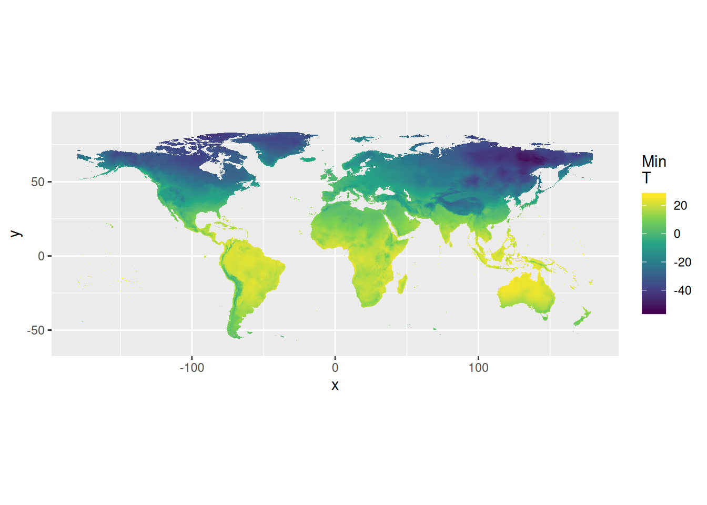

Chapter 4 Working with Raster Data
4.1 Introduction
4.2 Exercises
4.2.1 Download Climate Data from Worldclim
raster has functionality built-in to download files and import them automatically to your R session for you. We will use this functionality to get Worldclim data (Hijmans et al. 2005) for minimum temperature.
## Loading required package: sp##
## Attaching package: 'raster'## The following object is masked from 'package:tidyr':
##
## extract## The following object is masked from 'package:dplyr':
##
## select## Warning in .local(object, ...): summary is an estimate based on a sample of 1e+05 cells (5.14% of all cells)## tmin1 tmin2 tmin3 tmin4 tmin5 tmin6 tmin7 tmin8
## Min. -536 -518 -464 -376 -223 -146 -144 -150
## 1st Qu. -269 -254 -195 -100 -19 37 61 53
## Median -72 -59 -18 32 72 98 119 109
## 3rd Qu. 145 154 163 165 170 183 192 190
## Max. 263 260 259 272 289 302 308 309
## NA's 1356387 1356387 1356387 1356387 1356387 1356387 1356387 1356387
## tmin9 tmin10 tmin11 tmin12
## Min. -190 -300 -443 -515
## 1st Qu. 9 -64 -164 -234
## Median 81 38 -4 -47
## 3rd Qu. 182 171 156 144
## Max. 293 268 267 267
## NA's 1356387 1356387 1356387 1356504We can see that the tmin object is a raster stack.
In other words, this stack has several layers of data, one for each month plus the annual average minimum temperature.
4.2.2 Convert Temperature Data
Worldclim temperature data need to be divided by 10 to convert back to degrees Celsius. This will convert all of the layers.
4.2.3 Create a Data Set for January
We can create a new object for just the minimum temperature in January.
Using the [[]] is called indexing, it tells R to take the first object in the stack.
## [1] "RasterLayer"
## attr(,"package")
## [1] "raster"4.2.4 Create Data Frame for ggplot2
However, the data are in a format that ggplot2 still will not understand, a raster object.
We need to convert it to a data frame.
raster has a built-in function to do this for us.
## [1] "data.frame"Now we we are ready to plot the data in ggplot2.
4.2.5 Plot Global Minimum Temperatures
ggplot() +
geom_raster(data = tmin1_df, aes(x = x, y = y, fill = tmin1)) +
scale_fill_viridis_c("Min\nT", na.value = NA) +
coord_quickmap()## Warning: Removed 1359281 rows containing missing values (geom_raster).
4.2.6 Brazil Minimum Temperature
If we wish to plot only temperatures for Brazil, we need to perform some GIS operations with the raster object, a bit different than the sf in previous examples. Work is being done to make raster files in R work as seamlessly, but for right now it is not possible yet.
The first step is to crop the raster file, removing all data that is not Brazil.
We will use the br_sf object to instruct raster where our data begins and ends.
Using the base plot() method, quickly explore the new object, brazil that is created.

4.2.6.2 Mask Operation
The brazil object is not only Brazil but also bits of other countries nearby.
To fix this we will now use mask() from the raster package to remove data that are outside the outline of Brazil.
Now that we have the data we desire, we can convert it into a data.frame suitable for use in ggplot2.
4.2.7 Plot Brazil Minimum Temperature
4.2.8 Adding State Outlines
We can add the state outlines on top of the minimum temperatures as a new layer.
Using the br_sf object and geom_sf() will add state outlines. However, fill must be set to NA or the polygons will be filled with default grey.
4.3 Your Turn
- Create a map of Minas Gerais’ minimum temperature for December.
References
Hijmans, Robert J, Susan E Cameron, Juan L Parra, Peter G Jones, and Andy Jarvis. 2005. “Very High Resolution Interpolated Climate Surfaces for Global Land Areas.” International Journal of Climatology: A Journal of the Royal Meteorological Society 25 (15): 1965–78.